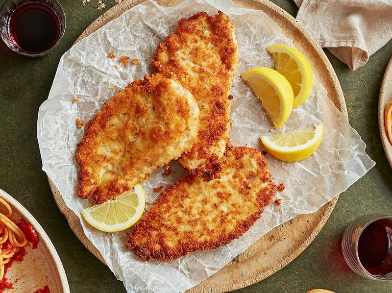

Chicken Milanese

Description
Quick, easy to make and delicious, these are the
characteristics of the Chicken Milanese. Try it today and
surprise a chicken lover.
Ingredients
- 2 large eggs
- Kosher salt and ground black pepper to taste
- ¾ cup all purpose flour
- 1 cup italian seasoned bread crumbs
- 2 skinless, boneless chicken bread halves,
thinly sliced
- ¼ vegetable oil for frying
- 1 lemon, cut into wedges
Directions
- Preheat the oven to 200 degrees F (95 degrees C).
- Beat eggs with salt and pepper in a shallow dish. Spread flour in another dish and bread crumbs in a third dish.
- Working with one piece at a time, gently press chicken into flour to coat and shake off any excess. Dip into beaten eggs, then press into bread crumbs. Gently toss between your hands so excess bread crumbs can fall away. Place breaded chicken onto a plate while breading the rest; do not stack.
- Heat vegetable oil in a large skillet over medium heat. Pan-fry chicken in batches of 2 or 3 pieces until golden brown and no longer pink in the center, 2 to 4 minutes per side. An instant-read thermometer inserted into the center should read at least 165 degrees F (74 degrees C). Transfer cooked chicken to a baking sheet and keep warm in the preheated oven while cooking remaining chicken.
- Serve with lemon wedges.
Editor's note:
The nutrition data for this recipe includes the full amount of the breading ingredients. The actual amount of the breading consumed will vary. We have determined the nutritional value of oil for frying based on a retention value of 10% after cooking. The exact amount will vary depending on cooking time and temperature, ingredient density, and the specific type of oil used.